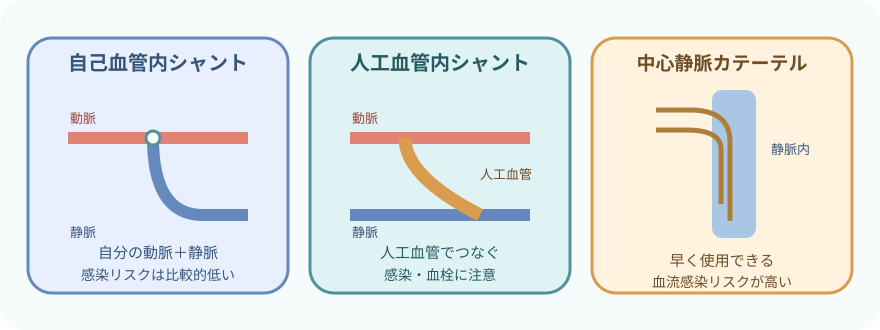

注意事項
このページの範囲
- 維持血液透析を受ける成人の基本的な観察を中心にする
- 腹膜透析、持続的腎代替療法、血漿交換は別の処方・機器として扱う
- 穿刺、返血、回路操作、アラーム対応は訓練と権限の範囲で行う
- 透析用カテーテル挿入は医師による中心静脈カテーテル挿入手技として扱う
すぐ応援を呼ぶ変化
- 意識低下、けいれん、急な不穏
- 胸痛、呼吸困難、チアノーゼ、重い不整脈、ショック
- 穿刺針の抜去、回路離断、止まらない出血
- 発熱・悪寒戦慄と血圧低下
- 血液漏れ、空気、溶血、急なアレルギー反応を疑うアラーム・症状
腎代替療法の中の透析

- 血液透析：血液を体外へ取り出し、ダイアライザを通して戻す
- 腹膜透析：腹腔内へ透析液を入れ、腹膜を介して物質と水分を移動させる
- 持続的腎代替療法：循環が不安定な急性期などで、ゆっくり連続して行う方式がある
- 腎移植：提供された腎臓の機能を利用する
治療選択は腎機能の数値だけでは決めない。全身状態、生活、予後、本人の価値観、支援体制を含めて意思決定する。
血液透析が代替すること

- 尿毒素などの老廃物を除去する
- 余分な水分を除去する
- カリウム、ナトリウム、カルシウムなどのバランスを調整する
- 酸塩基平衡を調整する
- 体液量の調整を通じて血圧管理を助ける
透析装置だけでは代替しない
- エリスロポエチン産生低下に伴う腎性貧血
- 活性型ビタミンDに関わる骨・ミネラル代謝
- 残存腎機能と尿量
- 腎不全の原因疾患や心血管合併症
血液透析の流れ

- 拡散：濃度差を利用して、尿毒素や電解質を移動させる
- 限外濾過：圧力差を利用して、余分な水分を除去する
- 抗凝固：体外回路内で血液が凝固しないようにする
- 監視：圧、気泡、血液漏れ、温度、透析液などを機器が監視する
血流量、透析液流量、除水量、抗凝固薬、治療時間は処方で決まる。一般的な値を患者へ一律に当てはめない。
バスキュラーアクセス

- 自己血管内シャント（AVF）：動脈と静脈を吻合し、静脈を発達させる
- 人工血管内シャント（AVG）：人工血管で動脈と静脈をつなぐ
- 透析用中心静脈カテーテル：短期間で使用できるが、血流感染への警戒が特に重要
- その他：動脈表在化など、患者ごとのアクセスがある
アクセス選択は「全員にAVF」ではない。血管、心機能、予想される治療期間、穿刺、生活、合併症を含めて個別に決める。
透析前の観察

今日は何を、どれだけ動かす治療か
- 体重：前回終了時、今回開始時、体重増加量、目標体重
- 循環：血圧、脈拍、不整脈、起立時症状
- 呼吸：SpO₂、呼吸困難、咳、肺うっ血を疑う所見
- 水分：浮腫、頸静脈、口渇、尿量、飲水・食事
- 全身：体温、意識、疼痛、倦怠感、転倒リスク
- アクセス：視診・触診・聴診、前回の止血時間
- 検査：電解質、尿素窒素、クレアチニン、血算など
- 治療：透析処方、抗凝固、内服・注射、食事、検査予定
目標体重（ドライウェイト）は固定値ではない
- 浮腫、呼吸、血圧、食欲、筋肉量、残存尿量の変化を合わせる
- 入院、感染、栄養状態、切断、妊娠などで見直しが必要になる
- 単に目標体重へ合わせるため、症状を無視して除水しない
シャントは「見る・触る・聴く」

一つの音だけで正常・異常を決めない
- 見る：発赤、腫脹、熱感、血腫、瘤、皮膚、出血、左右差
- 触る：スリルの範囲と変化、張り、硬さ、圧格差、冷感、疼痛
- 聴く：音の強弱、連続性・拍動性、高低、途中での変化
- 透析中：得られる血流量、動・静脈圧、再循環を疑う変化
- 透析後：止血時間、後出血、末梢循環、しびれ
- アクセス肢での血圧測定、採血、末梢静脈路は原則避ける
- 腕時計、きつい衣類、長時間の圧迫、アクセス肢を下にした睡眠を避ける
- スリル消失、急な変化、冷感、疼痛、手指色調変化はすぐ報告する
- 穿刺位置、方向、間隔、ローテーションはアクセスマップと院内手順に従う
透析中の観察
 開始直後：接続と急な反応を見る
開始直後：接続と急な反応を見る本人確認、処方、アクセス、穿刺・接続、回路、クランプ、抗凝固を確認。血圧低下、アレルギー、出血、疼痛がないかを見る。
 治療中：症状と機械の変化をつなぐ
治療中：症状と機械の変化をつなぐ血圧・脈拍、意識、呼吸、除水進行、アクセス、動静脈圧、回路の色・凝血、アラームを経時的に見る。
 終了時：止血と離床まで確認
終了時：止血と離床まで確認返血、抜針、止血、アクセス、血圧、体重、症状を確認。起立・歩行時のふらつきや転倒を防ぐ。
よくみる症状
- あくび、気分不良、悪心、嘔吐、冷汗、めまい、血圧低下
- 筋けいれん、腹痛、胸痛、背部痛、頭痛
- 呼吸困難、咳、SpO₂低下、不整脈
- 穿刺部痛、腫脹、血腫、漏血、針位置の変化
- 回路内凝血、静脈圧・動脈圧の変化、血液漏れアラーム
症状から考える透析中の変化

一つの症状を一つの原因に決めない
- 血圧低下：除水、薬剤、食事、心機能、不整脈、出血、感染など
- 胸痛・呼吸困難：心筋虚血、肺うっ血、不整脈、空気、溶血、アレルギーなど
- 発熱・悪寒：アクセス感染、血流感染、透析液・回路関連反応など
- 頭痛・悪心・意識変化：血圧、電解質、血糖、不均衡症候群、脳血管障害など
- 出血：穿刺部、回路離断、抗凝固、凝固異常など
不均衡症候群
- 透析導入時や高度な尿毒症で、急な溶質変化により起こりやすい
- 頭痛、悪心、落ち着かなさ、意識変化、けいれんなどをみる
- 脳卒中、低血糖、低酸素、電解質異常などを除外せず、すぐ報告する
急変時のポンプ・クランプ・返血・回路処理は原因により異なる。施設の緊急手順に従い、返血してよい状況かを自己判断しない。
透析用カテーテルの管理

接続のたびに感染と失血を防ぐ
- 発熱、悪寒、出口部の発赤・疼痛・腫脹・排液を確認する
- ドレッシングの湿潤、汚染、剥がれ、固定、位置を確認する
- 接続・離脱・ドレッシング交換は手指衛生と無菌操作を守る
- ハブは毎回、指定された方法と接触時間で消毒する
- 透析以外の採血・輸液へ使うかは、緊急性と院内方針を確認する
- クランプ開放やキャップ外れによる失血・空気流入を防ぐ
ロック液はカテーテルごとに確認する
- カテーテルごとの内腔容量、製品表示、処方を確認する
- 薬剤、濃度、注入量、使用前の吸引・除去方法は院内手順に従う
- 「ヘパリン原液を注入」をすべてのカテーテルへ共通する手順にしない
- 塗布剤もカテーテル材質との適合性を確認する
カテーテル挿入は、中心静脈カテーテルの安全手順、製品別指示、実施者の訓練・権限に従う。
透析後の観察と生活

治療終了ではなく、安全に戻るまで
- 終了時体重と目標体重との差
- 血圧、脈拍、不整脈、起立時のめまい
- 呼吸、浮腫、筋けいれん、疲労、頭痛、悪心
- 穿刺部の止血、後出血、血腫、スリル
- 帰宅・移動方法、転倒リスク、次回までの連絡方法
- 水分・塩分：尿量、心機能、透析処方、体重増加に合わせて個別に決める
- カリウム・リン・たんぱく質：検査値と栄養状態をもとに管理栄養士と調整する
- 薬剤：透析で除去されるか、透析前後の投与時刻、血圧・血糖への影響を確認する
- アクセス：毎日見る・触る。出血、スリル消失、発赤、疼痛、冷感は連絡する
報告・記録
記録すること
- 開始・終了時刻、治療方式、アクセス、処方からの変更
- 開始前・中・後の体重、血圧、脈拍、体温、呼吸、症状
- 除水目標、実除水量、終了時体重、残存尿量に関する情報
- アクセスの視診・触診・聴診、穿刺、止血、カテーテル所見
- 抗凝固薬、透析中の投薬・輸血・検査
- アラーム、回路・機器の異常、対応、医師への報告
- 患者の訴え、セルフケア、指導、次回へ引き継ぐ内容